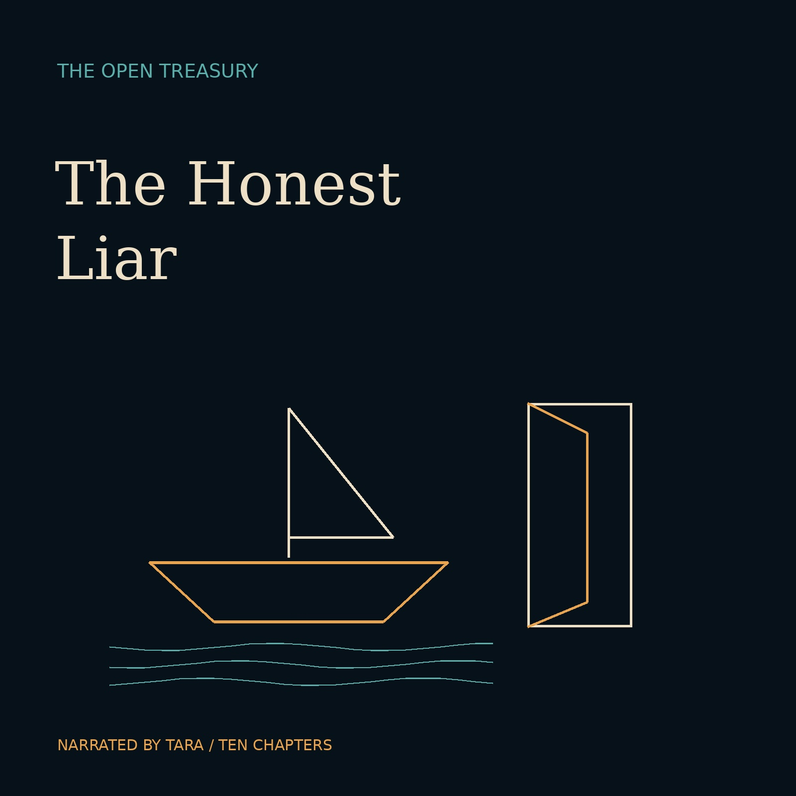

The Honest Liar
Dream voyages, declared inventions, and the promise a story makes. Lucian, Descartes and Shakespeare are read together without being collapsed into one doctrine.
Selected literary and philosophical readings, not proof that ordinary waking life is unreal. No altered-state practice, denial of injury, forced forgiveness, diagnosis or therapeutic claim. Optional fiction-writing exercise, ordinary practical safety and permission to stop.
Chapters
- 00:00 - A warning worth believing
- 02:19 - The map of a place that recedes
- 04:35 - Waking inside the voyage
- 06:37 - The man by the fire
- 09:02 - The pieces imagination borrows
- 11:32 - The show ends badly timed
- 13:29 - The objection: only a dream
- 15:54 - Go release them
- 18:08 - Mark the doorway
- 20:12 - The truth of the invitation
Sources and complete script
Source, rights and audio notes
Complete spoken script
Rights and narration
Original literary commentary and synthetic Aoede narration, with short historical Lucian/Hickes and Shakespeare quotations. Descartes paraphrased from selected First Meditation passages. Original commentary/narration CC0 only; third-party sources retain their separate rights. No modern translation, critic prose, artwork or music copied. No blanket source-edition license.
Full automated wording comparison and targeted audio/name/quote/join checks, not full human-ear or native pronunciation certification. Four exact paragraph repairs; untouched originals preserved. Master-17.44LUFS/-1.72dBTP; MP3-17.88/-1.84. Fixed+2.45dB gain and transparent peak limiting only, no EQ/pitch/speed change. Original symbolic moving animation, no historical reconstruction claim.
Free without ads, paid access, sponsorship or support solicitation.